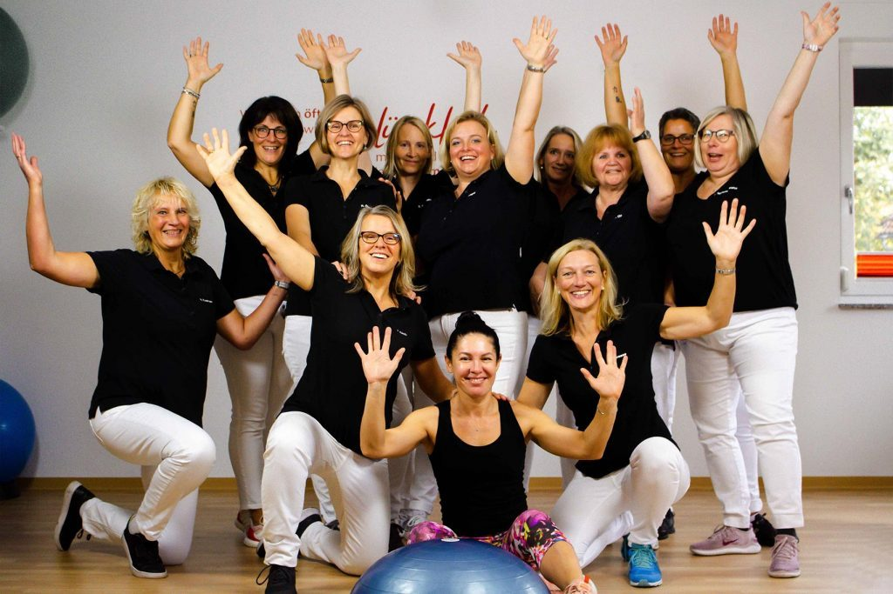
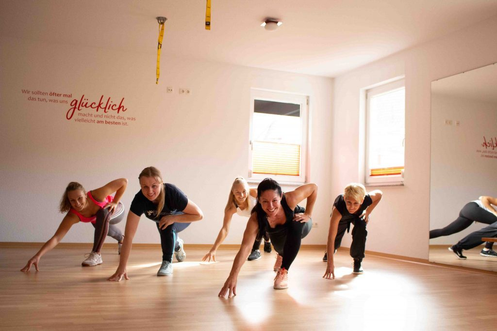

Physiotherapie & Osteopathie in Ispringen
Die beste Therapie ist ein Lachen
— und die richtige Behandlung
Seit 1996 bringt das 16-köpfige Team um Michaela Grosse Menschen in Ispringen und der Region wieder in Bewegung: mit Therapie auf Rezept, Training an Geräten und Prävention, die Spaß macht.

Unser Konzept
Therapie – Training – Prävention
Michaela Grosse verfolgt mit der Praxis ein durchgängiges Konzept: von der ärztlich verordneten Behandlung bis zum eigenständigen Training danach — alles unter einem Dach.
Therapie
Ärztlich verordnete Behandlung bei Schmerzen, nach Unfällen oder Operationen — Manuelle Therapie, Krankengymnastik, Lymphdrainage und mehr.
Zum TherapieangebotTraining
Kinesis-Stationen, TRX, Functional Training und individuelle Trainingspläne — mit und ohne vorherige Verordnung.
Zu den TrainingskursenPrävention
Pilates, Yoga, Seniorenfit, Ladies Power & Co. — aktiv vorbeugen, bevor überhaupt etwas wehtut.
Zu Gesundheits-PLUS
Willkommen
Ein herzliches Willkommen in der Praxis Grosse
Ich freue mich, dass Sie den Weg auf die Internetpräsenz der Praxis Grosse gefunden haben. Auf den nächsten Seiten erfahren Sie mehr über die Praxis, das großartige Team und unsere Leistungen.
Die Praxisräume erstrecken sich über das gesamte Untergeschoss in der Ispringer Bahnhofstraße 4: fünf Behandlungsräume, ein Trainingstherapieraum und ein Gerätetherapieraum bieten viel Platz, um schnell und nachhaltig fit und gesund zu werden. Weitere Behandlungsräume befinden sich im Buchenweg 37.
Bei der Einrichtung ging es mir darum, helle, einladende Räumlichkeiten zu schaffen, in denen sich jede und jeder gerne aufhält. Ich hoffe, auch Sie fühlen sich bei uns wohl und tun hier gerne etwas für Ihre Gesundheit.
Ihre Michaela Grosse und Team

Die beste Therapie: ein Lachen
Gemeinsam geht alles leichter
Dieses Motto gilt ganz besonders in der Praxis Grosse. Jedes Teammitglied ist wichtig und wertvoll. Wir sind zwischen Anfang 40 und Mitte 60 Jahre alt und haben unterschiedliche Qualifikationen, Zertifizierungen und Erfahrungen.
Wir alle — und ganz besonders Sie — profitieren von unserem großen Wissens- und Erfahrungsschatz. Denn bei allem Spaß: Ihre Gesundheit ist und bleibt unsere Leidenschaft.
Die Praxis in Zahlen
Seit 1996 in Ispringen für Sie da
Häufige Fragen
Bevor Sie anrufen
Die wichtigsten Antworten vorab — für alles Weitere erreichen Sie uns telefonisch oder über die Terminanfrage.
Benötige ich ein Rezept?
Für alle Leistungen aus unserem klassischen Therapieangebot (Manuelle Therapie, Krankengymnastik, Lymphdrainage u. a.) benötigen Sie eine Verordnung Ihrer ärztlichen Praxis. Unsere Kurse aus dem Bereich Gesundheits-PLUS sowie Zusatzleistungen wie Hot-Stone-Massage oder Kinesio-Tape können Sie auch ohne Rezept als Privatleistung in Anspruch nehmen.
Werden die Kosten von der Krankenkasse übernommen?
Bei einer ärztlichen Verordnung rechnen wir die Therapie direkt mit Ihrer gesetzlichen oder privaten Krankenkasse ab — die gesetzliche Zuzahlung zahlen Sie wie üblich selbst. Ob und in welcher Höhe Ihre Kasse Kurse aus Gesundheits-PLUS bezuschusst, erfragen Sie bitte direkt bei Ihrer Krankenkasse.
Wie vereinbare ich einen Termin?
Am schnellsten telefonisch unter 07231 / 807 99 zu unseren Öffnungszeiten. Alternativ nutzen Sie unser Terminanfrage-Formular — wir melden uns dann bei Ihnen zurück.
Ist die Praxis barrierefrei erreichbar?
Die Praxis ist weitgehend barrierefrei, lediglich am Eingang muss eine kleine Stufe überwunden werden. Benötigen Sie hier Hilfe, rufen Sie gerne vor Ihrem Termin kurz in der Praxis an — wir holen Sie ab.
Was sollte ich zum ersten Termin mitbringen?
Bitte bringen Sie Ihre Verordnung (falls vorhanden), Ihre Versichertenkarte sowie bequeme Kleidung mit, in der Sie sich frei bewegen können. Bei Behandlungen am Bewegungsapparat kann ein Handtuch hilfreich sein.